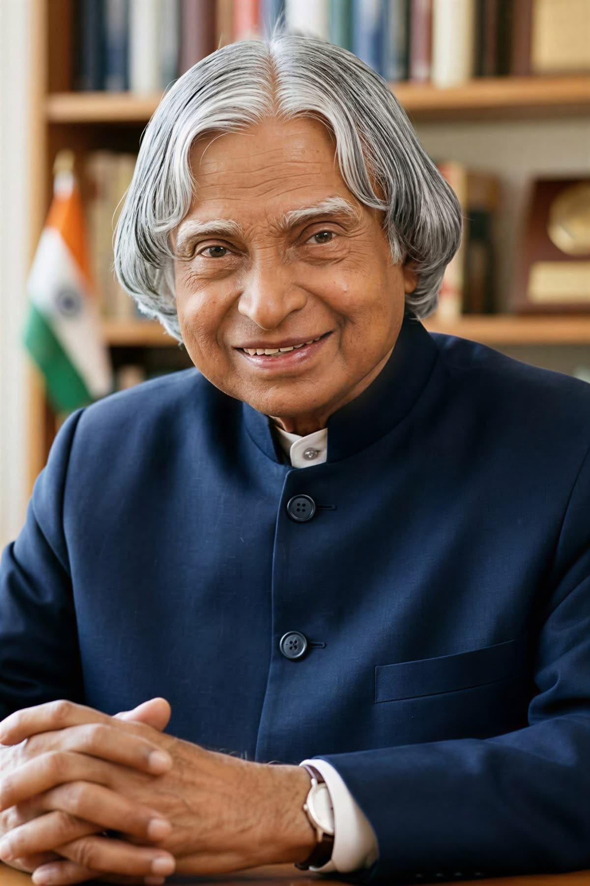
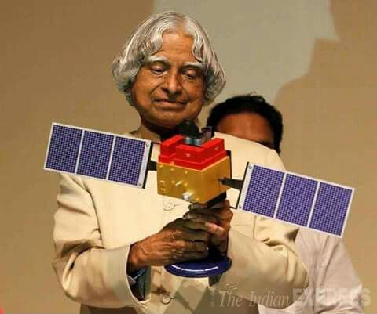
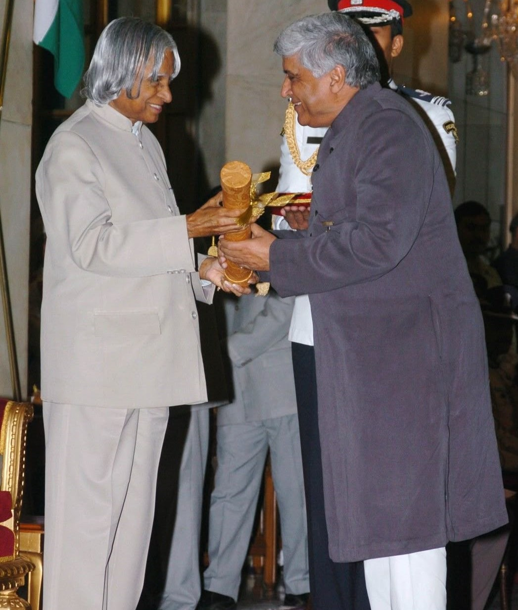
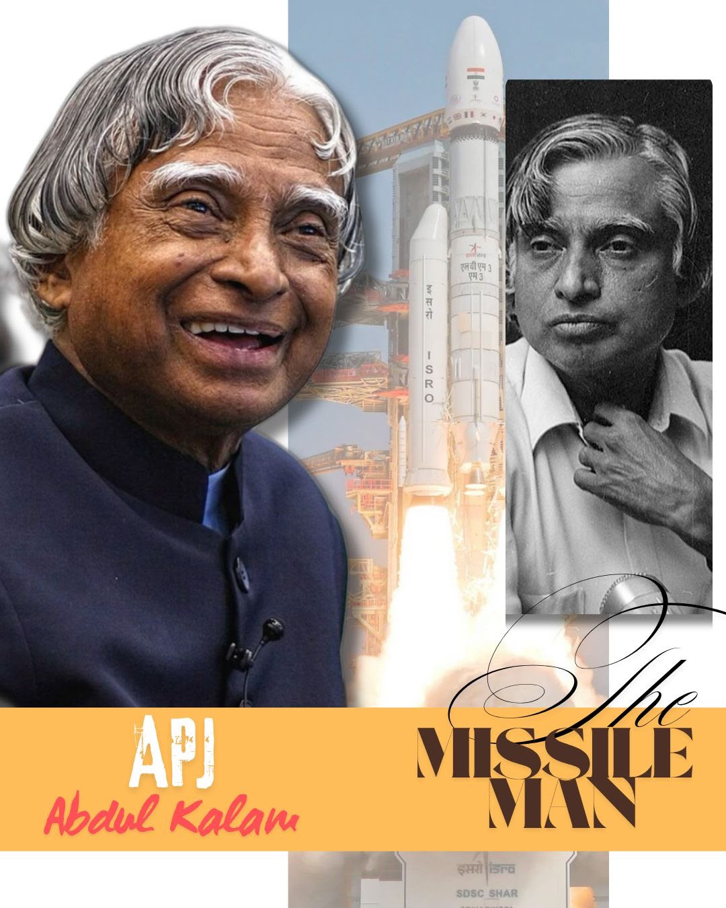

RENOWNED INDIAN SCIENTIST
"Dream, dream, dream. Dreams transform into thoughts and thoughts result in action."
Explore His JourneyABOUT
Dr. Avul Pakir Jainulabdeen Abdul Kalam was an eminent Indian aerospace scientist, engineer, author, and educator. Born on 15 October 1931 in Rameswaram, Tamil Nadu, he came from a modest family but developed a strong passion for science, mathematics, and learning. Kalam played a major role in India's space and defence programmes and became popularly known as the "Missile Man of India". He worked with the Defence Research and Development Organisation (DRDO) and the Indian Space Research Organisation (ISRO), contributing to important missile and space-launch projects. His leadership in India's Integrated Guided Missile Development Programme helped strengthen the country's defence capabilities. He also served as the 11th President of India from 2002 to 2007. Throughout his life, Kalam encouraged students to dream big, develop scientific thinking, and contribute to the nation. His books, speeches, and educational initiatives continue to inspire millions of young people. He received several prestigious honours, including the Bharat Ratna, India's highest civilian award. Kalam passed away on 27 July 2015 while delivering a lecture to students.
EDUCATION
| Year | Institution | Qualification | Field |
|---|---|---|---|
| 1954 | St. Joseph's College, Tiruchirappalli | Bachelor's Degree | Physics |
| 1958 | Madras Institute of Technology | Engineering Degree | Aeronautical Engineering |
| 1958 onwards | DRDO & ISRO | Professional Training | Aerospace & Defence Technology |
CONTRIBUTIONS
Played a leading role in India's Satellite Launch Vehicle-III programme and the successful deployment of the Rohini satellite.
Contributed significantly to India's Integrated Guided Missile Development Programme and indigenous missile technology.
Served as Scientific Adviser and played an important role in India's strategic defence and nuclear programme.
Promoted the vision of transforming India into a technologically advanced and developed nation.
Inspired millions of students through lectures, books, educational programmes, and interactions with young minds.
Strengthened India's scientific and technological capabilities through leadership in DRDO and ISRO.
RECOGNITION
Awarded for his contribution to India's scientific and technological development.
Recognised for exceptional service in science, engineering, and public affairs.
India's highest civilian award, presented for his exceptional contribution to the nation.
Served as the President of India from 2002 to 2007 and became widely known as the "People's President".
MEMORIES

Scientist and educator

A respected national leader

A pioneer of Indian aerospace technology
CONTACT
Explore more information about Dr. A. P. J. Abdul Kalam through reliable educational and official resources.